Chapter 2.2.6 qpdfview¶
qpdfview is the default PDF viewer for Denios-OS.
- Features:
Tabs
Presentation mode
Zoom to entire page/ page width
Rotating pages
Outline, properties, thumbnail, and bookmark docks
Printing support
Annotation and highlighting
Bookmarks
Customizable keyboard shortcuts
Viewing postscript files
Usage¶
To open a PDF file use or press Control + O on the keyboard. If you have a PDF open use from the menu, click the Open in new tab button or press Control + T. To refresh a PDF click the Refresh button, , or press F5 just like most web browsers. To switch between tabs on the keyboard you can press control control + tab or to go the next tab or control + shift + tab or to cycle through your tabs in the opposite direction. At the bottom of the tab menu will be a list of all your tabs you have open with the title of each document. To close the tab press the red X button on the tab or press Control +W. To close all tabs on qpdfview press Control + Shift +W. To restore the most recently closed tabs press Alt+Shift+W or . To view a menu with your recently closed tab and select the file you want. To see a list of all your tabs in a menu they are at the bottom of the menu.
If you want a second copy of a PDF file open right click on the tab and . If you want a copy of the current PDF on the tab and select . To open your file manager in the current directory right click on the tab and . To one pdf file on the left and another on the right click on the tab bar and select . To have one pdf file on top of another right click and select . To switch between which pdf you are able to change pages of simply move the mouse over that pdf. To close go back to only one pdf file right click on the tab and select .
To close all tabs right click on the tab bar and . To Close all tabs but that one you right click on right click on a tab and . To close all tabs to the right of the one you right click right click on a tab and . To close all tabs to the left right click on a tab and . To reorder your tabs left click and drag the tab where you want it in the order.
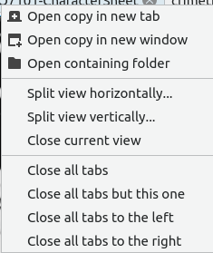If you want to view a particular page select the box (e.g. page 1/3) in towards the top left corner and type the page number (e.g. page 3/3). To move to the previous and next page press the left arrow and right arrow buttons respectively. Scrolling with the mousewheel past the end or beginning of a page will also change the page. Another way to move to the next page is to press spacebar or . Another way to go to the previous page is pressing Backspace or . Another way to jump to a particular page is to press control + j or . To go back to page which you have just come from press control + enter or . To jump forward a page press control + shift + enter or . To move to the last page of the PDF press the End key or . To move to the first page of the PDF press the Home key or .
To select text or an image from qpdfview press control+c or . Then the cursor will turn into a crosshair and you will be able to expand a box to select either text or an image and a menu to select copying the text, selecting the text, copying the image, or saving the image to file. Another way to copy text is to press Shift + Left Click.
To save your PDF file is to or you can press Control + s. You can save the file with a different name with . To save a copy of the document click . If the next time you want to open a pdf to a specific page as first page right click . :menuselection:` If you want to quit qpdfview press Control+Q.
To view two pages at once like if you want to see a two page spread of an illustration in a PDF of a book press Control + 6 or . To get your view back to normal press Control +6 again or again. To toggle the view of three pages at a time press Control +4 or . To view right to left languages on qpdfview press Control +Shift +R or . To view the fonts embedded in the PDF .
To search through your PDF file you can press control + f or from the menu . You will get taken to the results and will appear highlighted in yellow to see through the results you can press the down arrow, right click , or press F3 to see results farther in the document and press the upward pointed arrow button, right click , or press Shift +F3 to see results towards the start of the document. To exit the search dialog press Escape, right click , or . If you want searches to match case check the Match case checkbox. To match entire words check the Whole words checkbox. To highlight all matches of words check the Highlight all checkbox. To exit the search press the button that looks like an octagon.
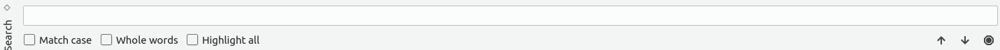To make qpdfview fullscreen you can press f11 or .
To make an annotation press Control +A or . To view the annotation you have made or edit it again press click on what looks like a sticky note with a pin in it. To remove your annotation right click on the annotation and click . If you just want to highlight something right click on the text and select text.
To select page width in zoom in qpdfview is a drop down menu with page width to show the width of the page on qpdfview, , or press Control +9. To view the whole page on qpdfview in this drop down menu select whole page, , or press Control + 8. To return to the original zoom press Control + 0 or . To zoom in is press the magnifying glass with a + in it or press Control + + or . To zoom out press the magnifying glass button with a - in it or press Control + - or . To rotate the file to the left is press Control + Left arrow or . To rotate the file to the right is press Control + Right arrow or . Another way to rotate is to hold Shift and then use the mousewheel. Another way to zoom with the scrollwheel is to hold Control and zoom with the mousewheel.
If you have a particularly long PDF file you might want to make a bookmark to find a specific thing easily. To create a bookmark press control +b or and give the bookmark a memorable title and description so you can find it in this document again easily. If you later want to remove the bookmark go or press control+ shift+ B.
Screenshot¶
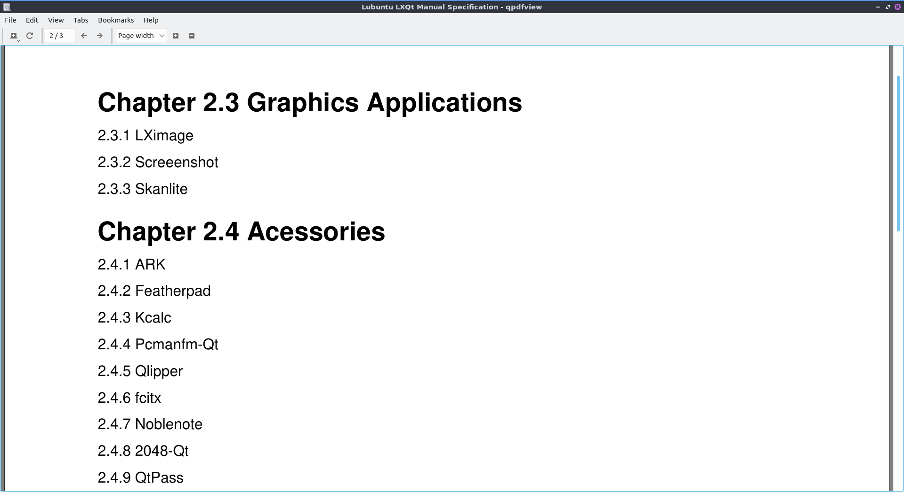Docks¶
qpdfview also includes some very useful docks. To view the outline dock, in the menu select or press F6 on the keyboard. It should appear on the left hand side of the PDF with collapsible sections and to expand or collapse each section left click on the . To go to a particular part of the outline double click on that part of the outline. To see the entire outline right click on the outline and select . To have your outline back to the original state right click on it and select . This is useful in navigating large PDFs.
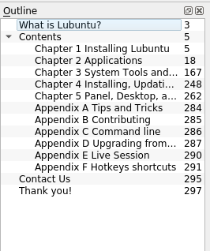To view properties of your PDF file press F7 or . To see a thumbnail of each page or press F8 to view a thumbnail of each page of the PDF file. If you want to close one of these docks click the X button on the dock to close it. To detach a dock to its own floating window press the diamond button to detach it. To get the dock back to where it was press the diamond button again.
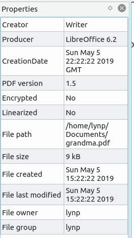Presentation¶
To enter presentation mode you can press f12 or which makes the content of the PDF take up the fullscreen and gives you no menubars or toolbars. To exit presentation mode you can press f12 again. To advance to the next page in the presentation press the spacebar or the right arrow. To go back a page in presentation press the left arrow. To exit the presentation press escape. To go to the first page of the presentation press the Home key. To go to the last page of the presentation press the End key.
Printing¶
To print your PDF press Control + P or . To change what printer you use use the Name drop down to select the name of the printer. To see more options press the Options >> button to see more options when you print. To select which pages to print use the Pages from button and then the fields for the first page to print and then the last page to print. To change what pages you print and type the page number in use the Pages field. To print your current page press the Current Page button. To change how many copies you print change the Copies field.
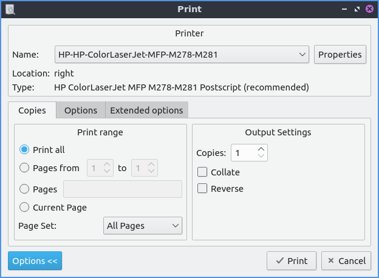If you are printing the PDF in black and white you can however toggle previewing the file in black and white by pressing Control + U or . To invert the colors of your PDF press Control +I or . To trim the margins off your PDF file press control +Shift +U or . If you want to turn off changed colors or trimmed margins off press or use the menu in the same thing again.
Customizing¶
To add your own settings to qpdfview you can get to a settings window with . To change how qpdfview uses links or manages tabs left click on the Behavior tab. The checkbox Open URL allows you to turn on or off Opening URLs or links within qpdfview. The Auto-refresh checkbox reloads the PDF whenever the file changes which is useful for authoring PDF files. To have qpdfview keep track of recently check the Track recently used checkbox. To keep track of recently closed documents check the Keep recently closed checkbox. To open the tabs you had open last time with qpdfview the next time you open the program check the Restore tabs checkbox. To restore bookmarks after qpdfview is closed check the Restore bookmarks checkbox. To have per file settings restored each time you open qpdfview check the Restore per-file settings checkbox. To change the page in the main view in addition with the presentation check the Synchronize presentation checkbox. To change what screen you use for presentations change the Presentation Screen field to the number of the screen you want to use. To have your outline dock follow what section you are viewing check the Synchronize outline view checkbox. If you want to scroll once to change an entire page check the Minimal scrolling checkbox. To change the color of highlights type a hex number for a color or select one from the Highlight Color drop down menu.
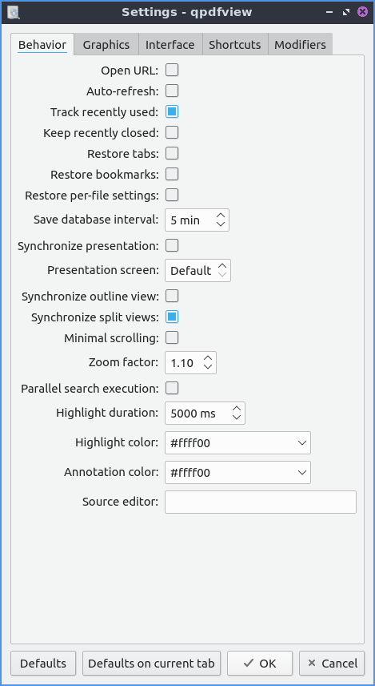If you want to reset these settings to the defaults is to press the Defaults button. If you just want defaults on the current tab you can press the Defaults on current tab button. If you want to return to viewing your PDF with the same settings press the OK button. If you wish to discard your changes press the Cancel button.
To deal with settings on graphics press press on the Graphics tab. To toggle having a small decoration showing where different pages are check the Decorate pages checkbox. To toggle having a red border around hyperlinks check the Decorate links checkbox. To toggle having a blue borders around fillable forms in a PDF check the Decorate form fields checkbox. The settings for paper color will has a drop down menu for previewing what it is like printing on colored paper. The checkbox Prefetch will preload pages not directly viewed by the PDF viewer not directly on the screen however this will use more resources. The drop down for Cache size will increase loading speed but will use more resources. The Prefetch checkbox loads pages before you view them. The Prefetch distance tells you how many pages away from where you are to load. The field for Presentation background color sets the color of the background for presentations. The Cache size menu increases the size of the cache which will apply more system resources to run heavy PDFs with hundreds of pages of full color artwork.
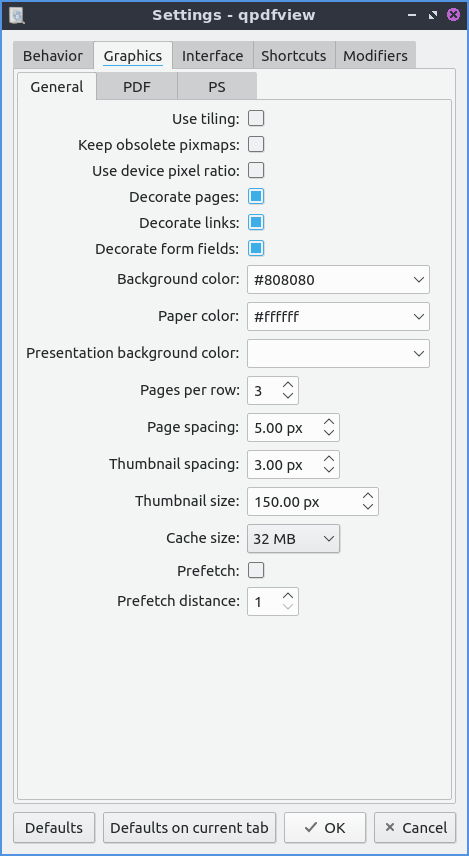The PDF subtab of the graphics tab has settings for font and paper color for viewing PDF files. To antialias images check the Antialiasing checkbox. To antialias text check the Text antialiasing checkbox. To use font hinting to view text easier to view change the Text hinting menu to Reduced or full. To not change the background color with change the Ignore paper color checkbox. To change how qpdfview draws thin lines change the Thin line mode drop down menu.
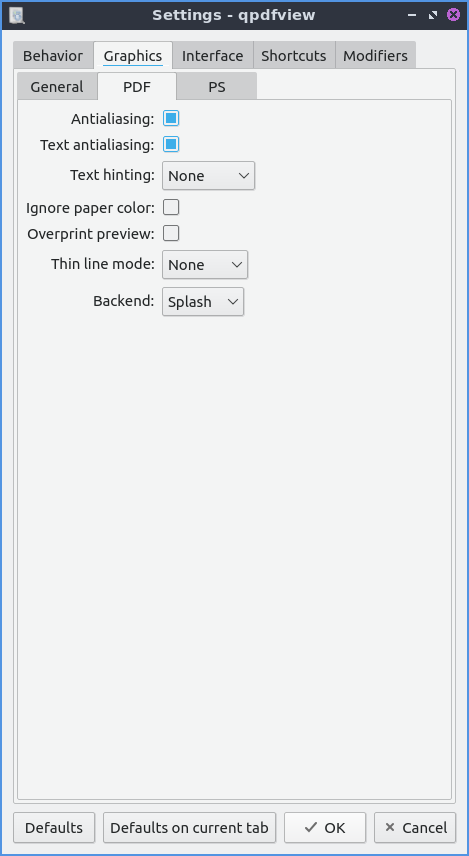The PS subtab manages how Postscript files appear on the screen. To change how many bits are used for antialiasing graphics change the Graphics antialias bits field. To change the number of bits of text antialiasing change Text antialiasing bits field.
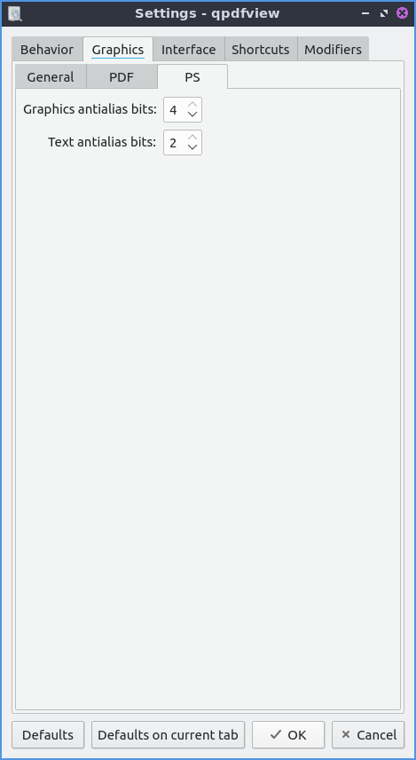To change the interface settings click on the Interface tab. If you want the tabs to be spread out press the spread tabs checkbox. The Tab position changes where the tabbar on the window. The Tab visibility menu can be set to as needed, always or never which will show or hide the tabbar. The checkbox for New tab next to current tab opens new tabs next to the current one. The field Recently used count lets you set the maximum number of files to keep around in recently used. The Spread tabs checkbox spreads the tabs to take up the whole tab bar and they get smaller the more tabs you open. To have qpdfview close when the last tab in qpdfview is closed check the Exit after last tab checkbox. To change the number of recently used PDF files in the menu change the Recently used count field. To change how many recently closed tabs of PDFs are shown change the Recently closed count field. To toggle showing the current page in the window title check the Current page in window title.
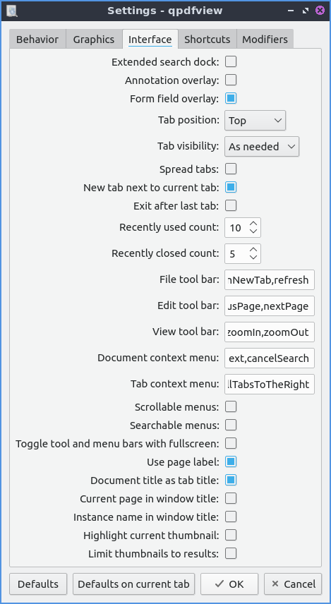The Shortcuts tab provides the ability to customize keyboard shortcuts. The Action column is what each keyboard shortcut does. The Key sequence column shows the keyboard shortcut. Double click in the key sequence column and type in your desired keyboard shortcut to change the keyboard shortcut.
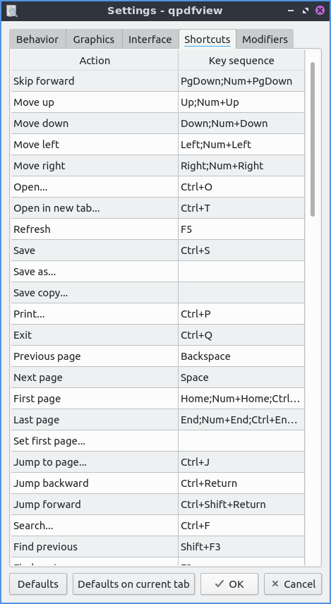The Modifiers tab allows you to change settings with the mouse and certain keyboard shortcuts in combination with the mouse. To change what keyboard shortcut to hold down while you hold down your mousewheel to zoom use the Zoom drop down menu. To change what keyboard key to hold down before using the mousewheel use the Rotate key. To change what key to press when you copy text to the clipboard when also pressing a mouse button use the Copy to Clipboard drop down menu. To switch which key you press when left clicking to add an annotation use the Add annotation drop down menu. To change what what you press to while left clicking to zoom to a selection change the Zoom to Selection drop down menu.
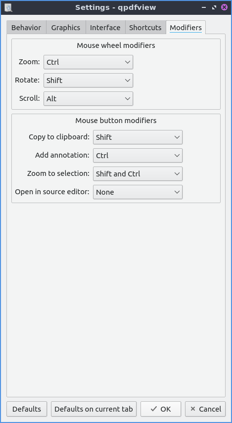Version¶
Denios-OS ships with version 0.4.18-3 of qpdfview.
How to Launch¶
To launch qpdfview go to the Menu or run
qpdfview
from the command line. The icon for qpdfview looks like an eye with a blue background.